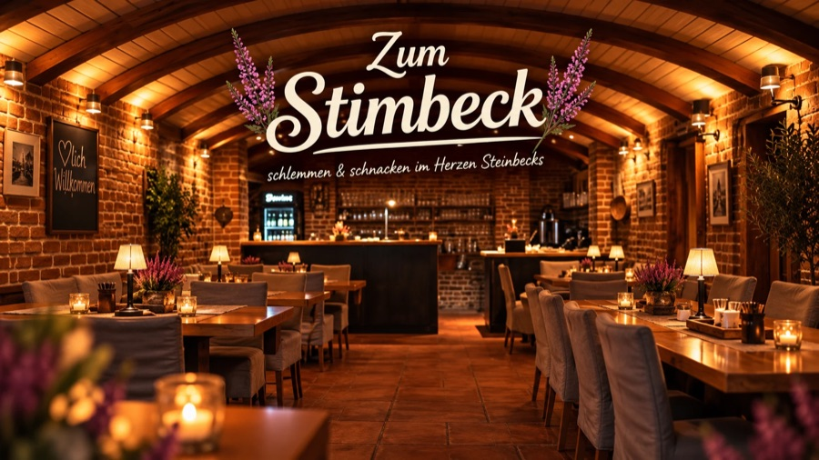

Regional verwurzelt. Modern gekocht. Persönlich geführt.
Frische, saisonale Küche, eigene Ideen und eine entspannte Atmosphäre. Bei uns treffen regionale Produkte auf moderne Interpretationen bekannter Gerichte.
Unkompliziert, persönlich und mit Freude am guten Essen.
Das Stimbeck
Ein vertrauter Ort, eine neue Handschrift
Das Zum Stimbeck ist ein Ort zum Zusammenkommen, Genießen und Verweilen.
Seit Februar 2026 führen wir das Restaurant mit unserer Vorstellung von guter Gastronomie: frisch gekocht, saisonal gedacht und mit Blick für die Menschen, die bei uns zu Gast sind.
Mehr über uns
Der Mensch hinter dem Stimbeck
Gastronomie. Auf unsere Art.
Hinter dem Zum Stimbeck stehen Michel Schadow und sein Team: mit einer klaren Idee und dem Anspruch, dass sich Gäste und Mitarbeiter gleichermaßen wohlfühlen.
Nicht immer nach den üblichen Regeln. Aber immer mit Überzeugung.
Michel SchadowInhaber & Koch
Gemeinsam feiern
Besondere Momente. Gemeinsam genießen.
Für eure besonderen Anlässe: bei uns im Haus oder mit Catering bei euch.
Feiern & Catering entdecken-
Bis zu 30 Personen
Geburtstag, Familienfeier oder Firmenveranstaltung bei uns im Haus.
-
Individuelles Catering
Auch außerhalb unseres Restaurants, persönlich geplant und frisch zubereitet.
Besuch uns im Stimbeck
Wir freuen uns auf euch.
Ein gutes Essen, nette Gespräche und ein entspannter Abend. Kommt vorbei und macht euch selbst ein Bild.
Zum Stimbeck · Steinbeck an der Luhe

Kartendaten © OpenStreetMap-Mitwirkende · Ein Klick öffnet Google Maps, erst dann werden Daten an Google übertragen.
29646 Bispingen – Steinbeck (Luhe)
05194 878 98 28 info@zumstimbeck.de
Öffnungszeiten
| Montag – Mittwoch | Ruhetag |
|---|---|
| Donnerstag | 17:00 – 22:00 |
| Freitag | 17:00 – 22:00 |
| Samstag | 17:00 – 22:00 |
| Sonntag | 17:00 – 22:00 |
Warme Küche bis 21:00 Uhr.
Route mit Google Maps